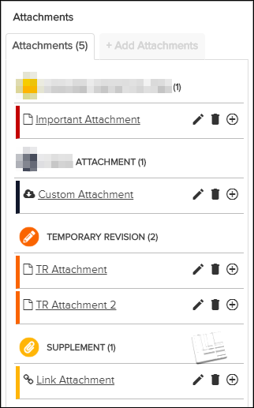

Attachments Pane
To open the  Attachments pane, click the
Attachments pane, click the  Attachments tab on the right side of the page or click the
Attachments tab on the right side of the page or click the  Upload Temporary Revision / Supplement icon. This pane contains lists
of attachments for the document, including
Upload Temporary Revision / Supplement icon. This pane contains lists
of attachments for the document, including  TEMPORARY REVISION and/or
TEMPORARY REVISION and/or  SUPPLEMENT. You can view an attachment by clicking on its title.
SUPPLEMENT. You can view an attachment by clicking on its title.
If you have all permissions enabled for Can Upload Supplement, you can also use this pane to manage the attachments.
To add a new attachment to the document, click the + Add Attachments tab. Refer to Add Attachment.
Depending on the your permissions and the source of the attachment, several icons can
appear to the right of the title in the  Attachments pane, For details on the possible action icons, refer to
this table:
Attachments pane, For details on the possible action icons, refer to
this table:
| Icon | Description |
|---|---|
|
Not applicable for Pinpoint Standalone Light. Note: This icon is only shown to users with all permissions enabled (Admin user)
for Can Upload Supplement. Refer to Migrate Attachments.
At the time of migrating attachments from the previous publication
revision to the current draft revision, the individual revision number of every
document in the publication is compared to the numbers in the previous publication
revision. For each document that has a new revision number, all attachments to the
document (including those at anchor points with content that remained the same)
are given this icon.This icon represents only a potential conflict in case the attachment contradicts the updated information in the latest revision. If you have proper permissions, click this icon to resolve the conflicted status of the attachment. If you click Continue on the resulting pop-up, the action removes the icon from the attachment to indicate that the current attachment has been accepted as accurate for the current revision. Note: This icon is only for informational purposes. It is possible to upload a new
revision with Data Manager without
resolving all attachments marked as conflicted in the previous revision.
Note: If an attachment was attached to the content that has been deleted in a future
revision, then the migrate attachment feature will not migrate the attachment when
the new revision has been published. Therefore, no conflict will be generated in
the Annotation/Supplement pane UI. However, the attachment
will still be viewable in the previous revision if the user has permissions to
"Can View All Draft Content" and "Can View All Released Content"
privileges in ACM.
|
|
| This icon is shown if the attachment was added directly with Pinpoint
Viewer and if you
have proper permissions. Click it to edit the attachment’s metadata for all users.
For details on the fields, refer to Add Attachment. Note: It is not possible to
directly edit the actual file of the attachment. If you need to replace the file
itself, you can create a new attachment with the updated file and delete the
previous attachment.
|
|
| This icon is shown if the attachment was added directly with Pinpoint Viewer and if you have proper permissions. Click it to delete the attachment. Refer to Delete Attachment. | |
Click this icon to expand (reveal) the details for the attachment. The details
given can include:
|
|
| Click this icon to collapse (hide) the details for the attachment. |